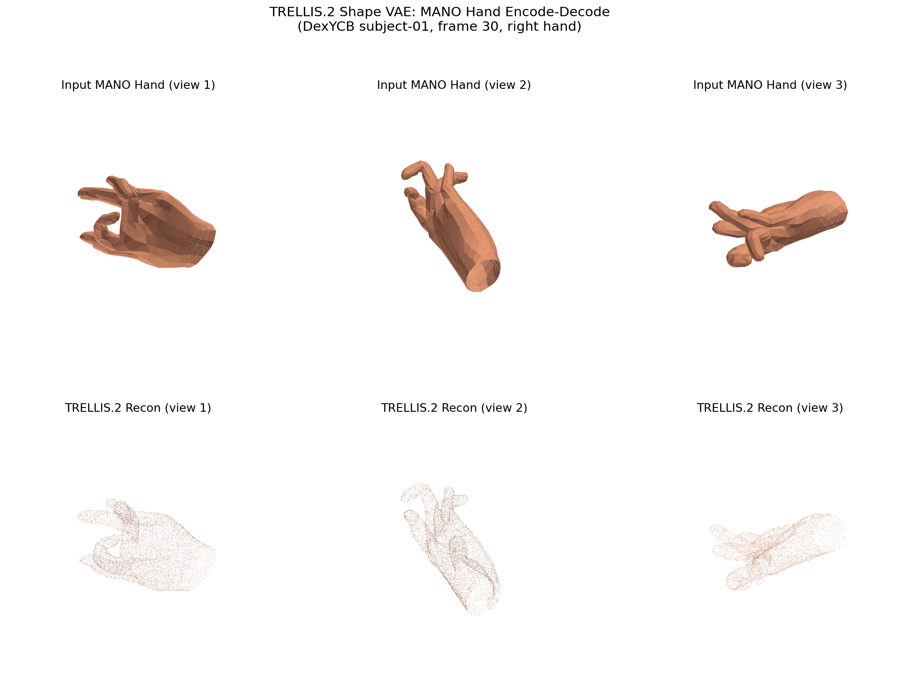
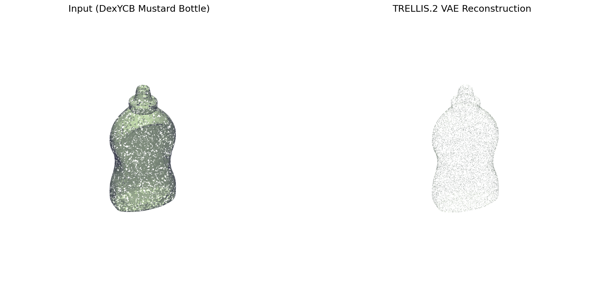
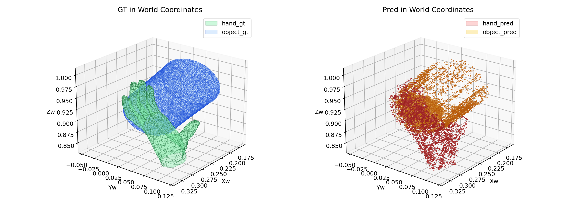
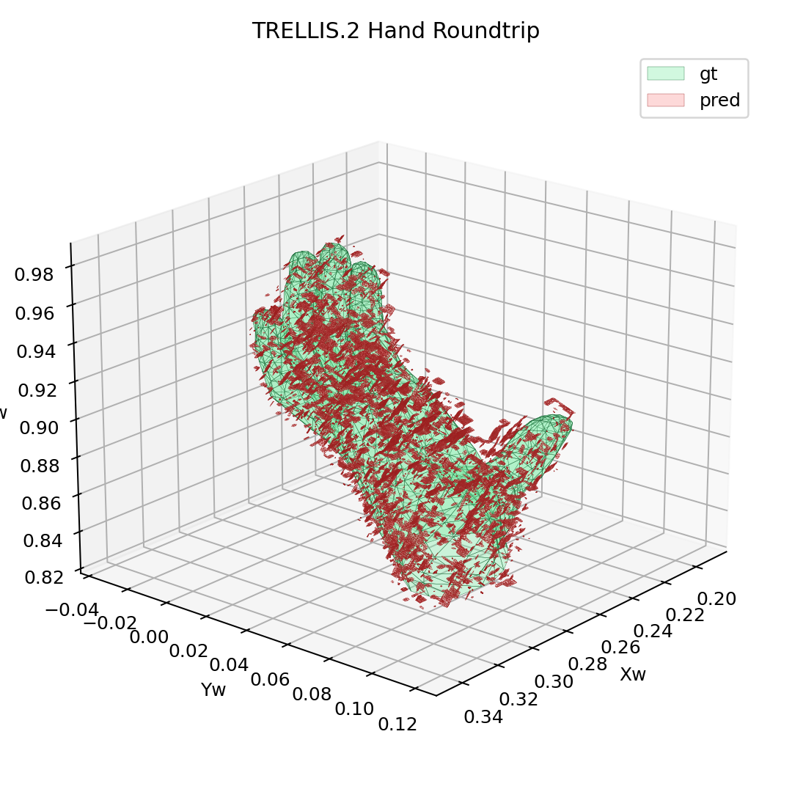
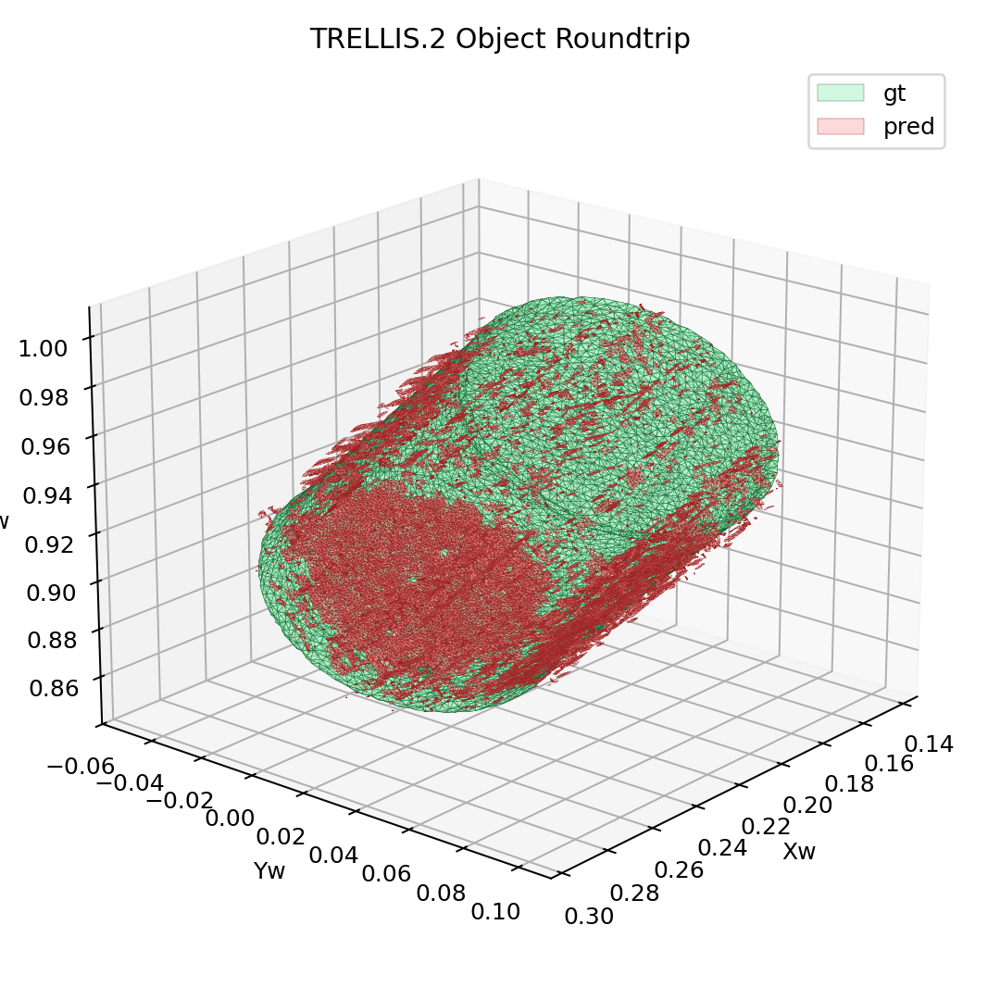

← Back to dashboard
P1 TRELLIS2 Round-trip Validation
Completed node · pass
This node publishes the Phase 1 validation that checks whether Trellis.2 can encode and decode
canonical DexYCB hand and object meshes without destroying their geometry. The answer is yes:
the hand remains structurally readable, the mustard bottle keeps its silhouette, and the combined
world-space layout stays plausible enough to justify moving forward with latent integration work.
Object output
75,997 verts
Why This Matters
Hand branch
The MANO hand survives the latent round-trip with finger structure still distinguishable. That is the minimum bar
required to treat Trellis.2 structured latents as a credible hand-side representation.
- GT mesh: 778 vertices
- Pred mesh: 63,167 vertices and 46,171 faces
- Assessment: pass, topology and overall hand shape preserved
Object branch
The mustard bottle reconstruction keeps its volume, silhouette, and proportion after dense decoding.
That is strong enough for this phase-one feasibility check.
- GT mesh: 1,024 vertices
- Pred mesh: 75,997 vertices and 48,090 faces
- Assessment: pass, bottle geometry remains recognizable
Visual Evidence

Hand reconstruction
Input MANO mesh versus decoded Trellis.2 reconstruction across multiple views.

Object reconstruction
DexYCB mustard bottle input mesh compared with the decoded Trellis.2 object output.

Combined world scene
GT hand and object placement versus the reconstructed scene geometry in world coordinates.

Hand world scatter
Green marks GT hand vertices and red marks the decoded hand vertices.

Object world scatter
Green marks GT object vertices and red marks the decoded object vertices.
Conclusion
This node closes one narrow question: can Trellis.2 preserve hand and object mesh information through
the canonical-mesh → structured-latent → decoded-mesh loop? The published evidence here says yes.
It does not yet validate end-to-end HOI reconstruction or convergence, but it clears the representational
feasibility gate for the next integration stage.